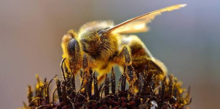
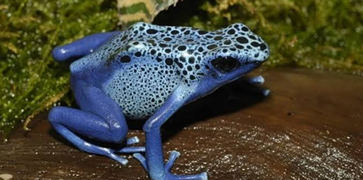
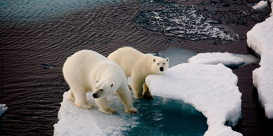
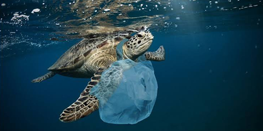
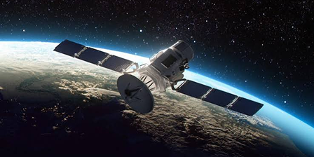

I confini invisibili dei mondi percettivi
UMWELT
La bolla percettiva
Limiti e applicazioni dei sensi
Olfatto e Mappa
Orsi polari e procellariformi orientati da impronte e rilievi sottomarini.
Ecolocalizzazione
Delfini capaci di sondare scheletri, organica interna e feti.
Magnetoricezione
Un senso enigmatico e privo di un recettore biologico noto.
Gusto e Luce
Pesci gatto con papille esterne e ragni vicini ad una perenne alba.
Interdipendenza biologica
Coevoluzione e Sguardo dell'altro
Coevoluzione
Relazione


La coevoluzione dimostra che le forme e i sensi non nascono in un vuoto neutro, ma si plasmano a vicenda: i fiori si sono evoluti per attrarre lo sguardo delle api, e i tratti dei viventi si sono scolpiti reciprocamente nel corso dei millenni.
La relazione non è un ponte artificiale tra soggetti separati, ma il tessuto stesso dell'esistenza: lo sguardo dell'Altro ci ha formati e inventati, rivelando che la nostra somiglianza più profonda risiede proprio nell'alterità.
Estinzione
Distruzione sistemica dei mondi
Cancellazione di sensorialità
L'estinzione non è un numero: è la scomparsa definitiva di codici visivi, olfattivi e uditivi unici.

L'invasione dell' Umwelt Umano
Abbiamo costrette le altre specienei nostri parassitari regimi sensoriali, trasformandoli in trappole mortali.

Il Grande Silenzio
Cerchiamo segnali alieni nello spazio profondo mentre soffochiamo le intelligenze con cui conviviamo.
